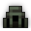
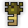
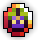
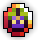

| Last updated: Exalt Version 5.13.0.0 (June 2025) |
|---|
 Music: Virulent Music: Virulent
|
| Dust Drops | ||
|---|---|---|
| 33-39 |
0 |
0 |
The Toxic Sewers is a medium-level dungeon that is a source of Potions of Defense, the Murky Toxin, the Void Blade, and the entire Acidified Assassin ST Set.
In the dungeon, there is an abundance of Sludge which inflicts  Sick whenever players stand on it. They will still be sickened for a few seconds even after leaving the Sludge onto safe ground.
Sick whenever players stand on it. They will still be sickened for a few seconds even after leaving the Sludge onto safe ground.
Portal to the Toxic Sewers has a chance to drop from Noxious Sprite, Smelly Octopus, Brimstone Wyvern, Eternal Tormentor and Slime God.
This dungeon must be completed to earn ‘Travel of the Decade‘, ‘King of the Mountains‘, ‘Hero of the Nexus’ and ‘Realm of the Mad God’ fame bonuses.
| The Realm Eye says: |
|---|

In the age when the realm was peacefully populated, a remarkably advanced drainage system was in operation. When Oryx came to power and the realm was abandoned, the sewers were left without maintenance. The sickly environment became a home for many of the realm’s most reviled creatures.
|
 The Toxic Sewers Key is available in the Nexus for 50  .
.
See the Toxic Sewers Guide for a complete walk-through on the dungeon and all its enemies.
The dungeon consists of a network of rooms designed as narrow corridors, occasionally with branching paths and larger rooms. Most rooms have a river of Sludge in the center and normal tiles on the edges - some of the sludge rivers will flow in a direction, attempting to push players with them. The starting and treasure rooms are small, square rooms, while the boss room is a large rounded square room mostly filled with Sludge but containing a square walkway in the center. The floor tiles consist of dark gray tiles, often with Sludge stains (which do not inflict Sick), and grated walkways. The walls consist of gray bricks. Mysterious machinery can occasionally be found operating in the pools of Sludge.
There is a rare chance to find a treasure room containing the Master Rat. Note that the spawn chance of the treasure room is much lower than those in other dungeons. However, there is also a uncommon chance to encounter the Golden Rat enemy in any normal room, which is more common than finding a treasure room.
While navigating through the Toxic Sewers, there is an uncommon chance to encounter a Golden Rat. Once found, it will say “Squeek!” in chat, notifying all players inside that it has been found. You will have to chase it and kill it quickly to get the loot before it disappears.
The Toxic Sewers is part of the Standard Quest pool from The Tinkerer and has five associated quests, including a scout quest.
| Name | Description | Items Needed | Reward |
|---|---|---|---|
| Scout the Sewers | Scout the Toxic Sewers and report back here! |  |
 |
| The Slime God | Defeat Gulpord in the Toxic Sewers. | |
 |
| To the Mountains! | Head to the mountains to take down Oryx’s generals! |       |
|
| As Above, So Below | Take to the skies and sink to the depths for this quest! | |
|
| Rainbow Road | Bring me some marks while you search for stat potions! | |
Note: These tips are general tips for all classes, and all players. Some classes may require different strategies.
Try and stick to the sides of the hallways and on the walkways, as the sewer water applies sick which can result in your death due to a lack of HP regeneration! Notably, the water in the narrow hallways between rooms does not cause sick. Just make sure not to over zealously stick to the hallways to the point that those pesky brutes can take a good whack at you (they can do triple digit DPS if you are unmaxed).
Before engaging in a fight with Gulpord, it should be noted that there are three slime gods surrounding him. Those slimes combined with Gulpord’s frequent armor break stars can spell a quick death for any class! Due to this, it’s a good idea to clear the slime gods by walking on the very edge of the boss room (the area with sewage). This tactic is similar to clearing the white demons in an abyss. Beware: walking along the grating will activate Gulpord.
Though you may have high defense, beware of Gulpord’s final phase, where he will flash red and rush at the nearest player, throwing armor break stars at the player and firing rings of slow stars. He may be big, but he moves fast and does large amounts of damage. Just to make it more of a pain, he is immune to stun at this phase, so knights are not as effective. If you have a Crystal Sword, now’s the time to use it.
An archer/huntress/sorc/necro with slow or paralyze are all great choices for Gulpord, as these abilities can give you a lot more breathing room for his chase phase.
As with many other mountain dungeons, a party of 2 players are both guaranteed to obtain a potion of defense. Having a well-coordinated two-man team is very worthwhile.
There are 8-10 rooms between the spawn and the boss. It should be noted that the L-shaped and U-shaped rooms count as one room. Besides that, the two rooms with flowing water connected by a narrow passage also count as one.
If you are hunting for treasure rooms, one useful tip is that a split can have a max of 3 rooms. So if you see that the entrance of the 3rd room is not the same as the treasure room, it is either a dead end or the main path to boss.
The Toxic Sewers was originally called the “Dank Sewer” when it was still being developed. This is supported by many of the dungeon’s enemies in the game’s code having the acronym “DS” (which stands for “Dank Sewer”) before their names.
The Toxic Sewers was released on Patch 27.7.X6 (Oct 2016), along with the Puppet Master’s Encore and The Hive, which represented DECA’s first major content addition to the game.
The dungeon was designed by Kiddforce, a former member of the “User-Generated Content” group who is now an official DECA developer.
The dungeon was intended to be the dedicated Potion of Defense source from Godlands dungeons. Upon its release, Potions of Defense were no longer a guaranteed drop from Archdemon Malphas, the boss of the Abyss of Demons.
In Exalt Version 1.3.0.0 (Dec 2020), this dungeon along with the Woodland Labyrinth and The Crawling Depths received complete reworks, changing almost all content within the dungeon.
Before Exalt Version 5.11.0.0 (May 2025), dungeon completion gave 22-51  with 60% chance.
with 60% chance.
Before Exalt Version 5.12.0.0 (June 2025), dungeon completion gave 30-36  .
.


{kind=link}